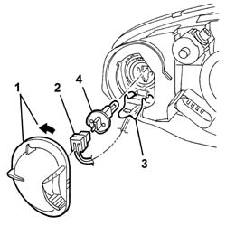
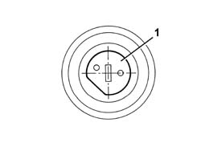

5540D15 BULB FOR FOG LIGHT - R.R. WITH LAMP REMOVED
- Path
- Procedures > 55 ELECTRICAL EQUIPMENT > 5540 EXTERIOR LIGHTING > 5540D fog lamps > 5540D15 BULB FOR FOG LIGHT - R.R. WITH LAMP REMOVED
- Kind
- repair procedure (removal / refitting; the operation number is the code)
- Applies to
- all engines; all production periods
- Interactive page
- https://sloeber94.github.io/elrnDB-a147/en/#/3025564
Applies to: all engines; all production periods
 Removing
Removing
 Refitting
Refitting1. Rotate the cover in an anti-clockwise direction and remove it.
2. Disconnect the electrical connections.
3. Release the retaining spring moving it sideways.
4. Extract the bulb.

Applies to: all engines; all production periods
Refitting
RemovingCheck the efficiency and the cleanliness of the bulb.
1. Insert the bulb in its housing, positioning it as illustrated in the diagram.

Applies to: all engines; all production periods
Engage the retaining spring.
Connect the electrical connection
Refit the cover and rotate it in its housing.